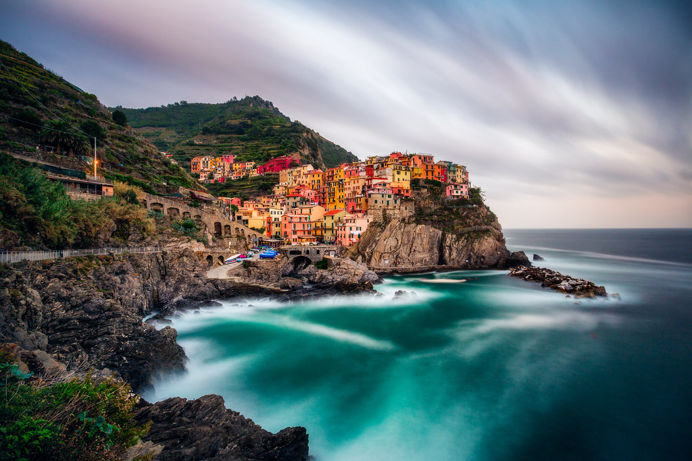

Activities
Italy is packed full of sights, history, activites, sports, etc. We will list just some of them so make sure to do some of your own research too!
- Visit Mount Vesuvius
- Visit Cinque Terre
- Lose yourself in the Uffizi Gallery
Mount Vesuvius is a beautiful and famous mountain located in Naples.  It is a very popular tourist destination but not one to be overlooked, because it deserves its popularity. Its sights have been described as life changing and it is really a once in a lifetime experience.
It is a very popular tourist destination but not one to be overlooked, because it deserves its popularity. Its sights have been described as life changing and it is really a once in a lifetime experience.
Cinque Terre is an Italian national park, it is made up of five different villages on cliffs overlooking a river. Each Village in Cinque Terre has its own unique feel and vibe! It is a unique visit you won't get anywhere else.
The Uffizi Gallery is an art gallery with worldwide renown for its collections of historical masterpieces, including sculptures and paintings. The Uffizi Gallery has a look into the past and its mind boggling beautiful art that even a regular Joe could appreciate. Again a staple of Italy and one of the best activities the entire world can offer.